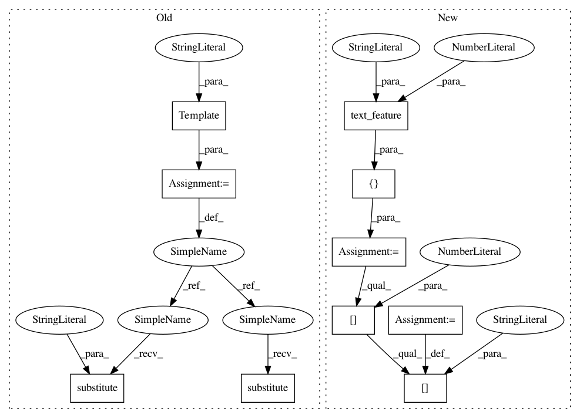

d6c1b86594ef9a97e9f503547ab6567f89508486,tests/integration_tests/test_experiment.py,,test_experiment_image_inputs,#Any#,177
Before Change
def test_experiment_image_inputs(csv_filename):
// Image Inputs
image_dest_folder = os.path.join(os.getcwd(), "generated_images")
input_features_template = Template(
"[{type: text, name: random_text, vocab_size: 10,"
" max_len: 10, encoder: stacked_cnn}, {type: numerical,"
" name: random_number}, "
"{type: image, name: random_image, encoder: ${encoder},"
"preprocessing: {in_memory: ${in_memory}, height: 8, width: 8, "
"num_channels: 3}, resnet_size: 8, destination_folder: ${folder}, "
"fc_size: 32, num_filters: 8}]")
// Resnet encoder
input_features = input_features_template.substitute(
encoder="resnet",
folder=image_dest_folder,
in_memory="true",
)
output_features = "[{type: category, name: intent, reduce_input: sum," \
" vocab_size: 2}," \
"{type: numerical, name: random_num_output}]"
rel_path = generate_data(input_features, output_features, csv_filename)
run_experiment(input_features, output_features, rel_path)
// Stacked CNN encoder
input_features = input_features_template.substitute(
encoder="stacked_cnn",
folder=image_dest_folder,
in_memory="true",
)
rel_path = generate_data(input_features, output_features, csv_filename)
run_experiment(input_features, output_features, rel_path)
After Change
image_dest_folder = os.path.join(os.getcwd(), "generated_images")
// Resnet encoder
input_features = [
image_feature(
folder=image_dest_folder,
encoder="resnet",
preprocessing={
"in_memory": True,
"height": 8,
"width": 8,
"num_channels": 3
},
fc_size=16,
num_filters=8
),
text_feature(encoder="embed", min_len=1),
numerical_feature()
]
output_features = [
categorical_feature(vocab_size=2, reduce_input="sum"),
numerical_feature()
]
rel_path = generate_data(input_features, output_features, csv_filename)
run_experiment(input_features, output_features, data_csv=rel_path)
// Stacked CNN encoder
input_features[0]["encoder"] = "stacked_cnn"
rel_path = generate_data(input_features, output_features, csv_filename)
run_experiment(input_features, output_features, data_csv=rel_path)
// Stacked CNN encoder, in_memory = False
In pattern: SUPERPATTERN
Frequency: 3
Non-data size: 10
Instances
Project Name: uber/ludwig
Commit Name: d6c1b86594ef9a97e9f503547ab6567f89508486
Time: 2019-05-01
Author: smiryala@uber.com
File Name: tests/integration_tests/test_experiment.py
Class Name:
Method Name: test_experiment_image_inputs
Project Name: uber/ludwig
Commit Name: d6c1b86594ef9a97e9f503547ab6567f89508486
Time: 2019-05-01
Author: smiryala@uber.com
File Name: tests/integration_tests/test_experiment.py
Class Name:
Method Name: test_experiment_image_inputs
Project Name: uber/ludwig
Commit Name: d6c1b86594ef9a97e9f503547ab6567f89508486
Time: 2019-05-01
Author: smiryala@uber.com
File Name: tests/integration_tests/test_experiment.py
Class Name:
Method Name: test_experiment_multi_input_intent_classification
Project Name: uber/ludwig
Commit Name: d6c1b86594ef9a97e9f503547ab6567f89508486
Time: 2019-05-01
Author: smiryala@uber.com
File Name: tests/integration_tests/test_experiment.py
Class Name:
Method Name: test_experiment_tied_weights